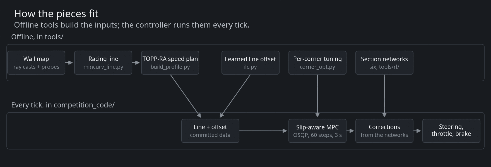
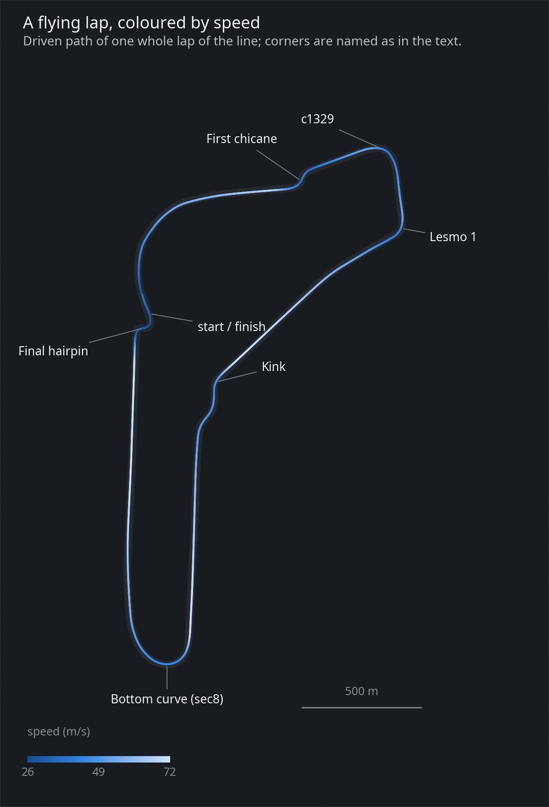
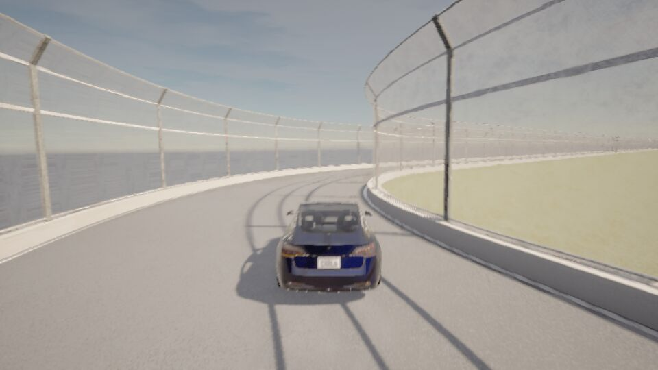
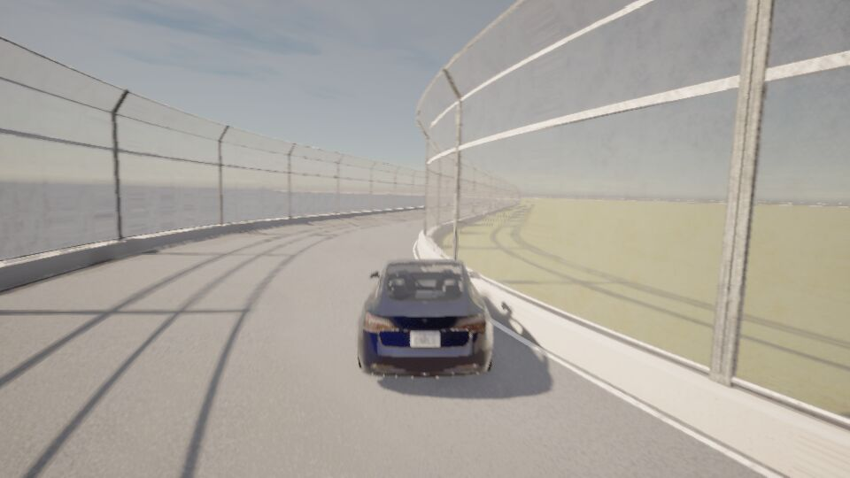
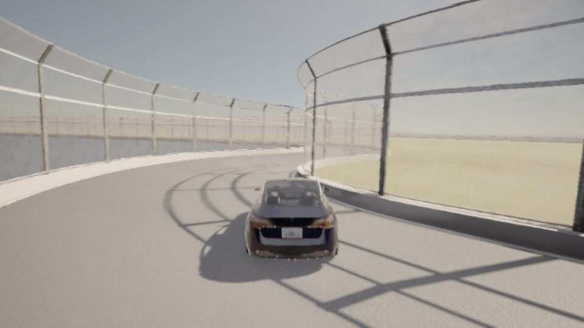

Contents
1 Where we started2 Where we are now3 How we got there4 What did not work5 How it was achievedIf we started again1Where we started
The starting point was slow, a simulator that had to be made reproducible first, and a first controller that crashed before it ever finished a lap.
1.1The task#
The ROAR Fall 2026 Simulation Racing competition (UC Berkeley) asks for a car that drives three standing-start laps of Monza in CARLA 0.9.12, a Tesla Model 3, as fast as it can. The score is the simulated time of the three laps, and a collision is not acceptable. The submission reads its sensors only through get_last_gym_observation(), never steps the world and never teleports, and it runs under the organisers' own runner, which we do not modify.

1.2The starter code#
The starter code's time in our simulator; it finished clean.
results.csv, row "baseline"; experiment log, line 26
The organisers' starter code finished three laps in 1658.90 s without a collision. Everything after that is about driving the same three laps in a fifth of the time.
1.3A simulator we could trust#
Monza ships as a Windows build of CARLA. We run it on Linux under GE-Proton 9, which needs -dx12 (the DX11 path asserts) and must never be started with -quality-level=Low, which crashes the map for want of materials. The simulation is synchronous, so the wall-clock speed of the machine does not change the score. The same setup still varies by about 0.05 s from race to race, and we treat anything smaller than that as noise.
The first tool we built was not a controller but a parallel evaluator: one simulator per slot, each on its own port, four races at a time. Every later result in this book was measured that way.
1.4A model of the car#
Our first controller needed a model of the car, and fitting one meant driving it. The first system-identification laps crashed three times:
- The first lap crashed with a dither of ±0.9 m at 35 to 41 m/s, on a line within about 0.5 m of the walls (experiment log, line 67).
- The second crashed at line distance 514 m at 53.5 m/s, in a lateral oscillation: a pure-pursuit lookahead of 16 m is too short at that speed (line 72).
- The third crashed at about 4155 m at 25.6 m/s with the car exactly on its line, because the line ran 4.1 to 4.8 m from the centreline where the wall allowed 4.3 to 4.7 m (line 75).
The third crash taught the lesson that shaped the rest: the line we had borrowed was a pure-pursuit target, which cuts inside by design, not a path a car can drive. The fitted model that came out of this: top speed 71.55 m/s, braking 15.93 m/s² (line 87).
1.5The first finish#
The first race our own MPC finished took 407.10 s, without touching anything, at a top speed of 60.3 m/s (experiment log, line 122). From there the gated versions run 383.20 s, 364.50 s, 360.10 s and 340.60 s (figure 3.2). Chapter 3 is that road.
2Where we are now
318.40 s median over 20 races, no collision, 0.13 m from the nearest wall at the closest. Here is exactly how much that claim covers.
One machine (Linux, Proton), Windows untested; 20 clean races bound the crash rate only to about 1 in 7. Limits
2.1The result#
Against the Summer 2026 winner's code run in our simulator (319.75 s).
318.40 − 319.75
The release gate ran 20 full races of the committed setup: 318.30 to 318.40 s, median 318.40 s, none with a collision. The same simulator ran the Summer 2026 winner's code at 319.75 s, so the entry is 1.35 s faster, on our machine. The two numbers share a simulator and a machine, not an evaluation by the organisers.

Source: race log, tools/make_media.py.
2.2The release gate#
A release is gated by tools/gate.py: 20 full races of the committed setup, on slot checkouts verified byte-for-byte against the repository, four of them with the simulator window open. Each race's closest approach of the car body to a wall is measured from its log. The rule is that every race finishes with no collision and the closest approach is at least 0.10 m. Section 5.8 tells how the gate failed once before it passed.
2.3Where the car is closest to the walls#
Across the gate's 20 races the closest the car body came to a wall was 0.13 m, at Lesmo 1 or the final hairpin. The figure for those corners comes from a wall map that was ray-cast and then corrected by teleporting the car through its own poses; away from those corners the map is ray-cast only. The static probe of the car's own poses gives the clearances in section 5.7.
2.4Limits of this result#
Limits of this result
Measured on one machine: Ubuntu 22.04, RTX 5060 Ti, Monza server under GE-Proton 9. Windows is untested. 20 of 20 clean races bound the crash rate only to about 1 in 7. The wall map is ray-cast except at the probed corners.
Where "about 1 in 7" comes from: if every race has the same unknown chance p of a collision and 20 of 20 were clean, the largest p that still leaves a 5 % chance of seeing 20 clean races solves (1 − p)20 = 0.05, which gives p ≈ 0.139. That is arithmetic on the gate, not a claim about the organisers' machine. A crashing car in our tests touched a wall at 0.0 to 0.1 m, and the closest clean approach was 0.13 m, which is why the clearance is a stronger piece of evidence than the count.
2.5Watch it#
Three frames from the chase camera, rendered by CARLA during the 318.40 s race, at the three corners where the car comes closest to a wall.



Watch the five versions race together · Next: how we got there
3How we got there
Five headline versions, and a longer history of gated releases that was not a straight line down. Most of the time came from making the car follow its own plan and from measuring where the walls really are, not from a faster plan.
One machine (Linux, Proton), Windows untested; 20 clean races bound the crash rate only to about 1 in 7. Limits
3.1Five versions#
Source: experiment log, lines 168, 263, 278, 289 and 346 (not published).
- v1, 341.20 s. An early MPC with a TOPP-RA speed plan.
- v2, 322.50 s. Learned corrections, and a late-apex exit at the kink.
- v3, 319.85 s. The MPC speed weight raised from 2 to 128, and a per-corner re-tune.
- v4, 319.15 s. Corner exits and a re-tune.
- v5, 318.40 s. A line shaped by the measured walls, the real-wall corridor map.
3.2Every gated version#
The five headline versions leave out most of the history. The gated releases in order, from the experiment log: 383.20 s, 364.50 s, 360.10 s, 340.60 s, 341.20 s, 340.55 s, 333.90 s, 331.80 s, 326.75 s, 322.95 s, 322.50 s, 322.35 s, 319.85 s, 319.15 s and 318.40 s. The series is not monotone. Version 8d at 340.60 s was gated before 8e at 341.20 s, and 8e was kept: it had about 0.07 m more wall margin and half the steering jerk, for 0.6 s per race (experiment log, line 169). We decided early that margin outranks lap time, and 8e is the first place that decision cost us a number.
3.3Every race#
Source: results.csv (218 races) and logs/gate_g2.csv.
3.4Where the time went#
Source: race logs, tools/site_data.py.
Source: race logs, tools/site_data.py.
4What we tried that did not work
Most ideas made the car slower or put it into a wall. This table records each one with its number, so nobody has to try it blindly again.
| Idea | What happened | Source |
|---|---|---|
| A low MPC speed weight (q_v = 2) | The car ran 3 to 9 m/s below its plan in every corner. Raising the weight plus the re-tune that followed recovered 2.3 s; the weight alone gained 1.75 s. | README; experiment log, line 275 |
| A free minimum-curvature line inside the waypoint polygon | Crashed. Fences and obstacles sit inside the polygon, so it is not the wall layout. | line 168, README |
| Splicing other cars' driven paths into our line | Two splices collided; the clean third, 338.45 s, was slower than ours. Later splices of a second entry's path ran 320.25 to 320.45 s or crashed. | lines 196, 295 |
| Pure-pursuit steering | Crashed in the early system-identification laps, in a lateral oscillation at 53.5 m/s with a 16 m lookahead. | line 72 |
| Hybrid pursuit and MPC | Three collisions at the chicane's second apex; the pursuit cut 2.1 m inside onto the obstacle. | line 244 |
| A tyre-scrub model in the plan | 341.20 s and 334.60 s against 333.90 s: rejected. | line 199 |
| Harder braking (brake scale 1.10) | 334.65 s, with the hairpin 4.31 m off the centreline. | line 211 |
| Pedal braking at 1.25× (sections 0 to 8) | A spin at the long curve and a collision. | line 226 |
| Pedal braking at 1.25× (sections 0 to 4) | 340.40 s with a 4.8 m slide. | line 227 |
| Braking from the measured pedal map | 326 to 332 s, slower than the 322 s car of the time: the car cannot brake that hard while cornering. | line 281 |
| Plan speed scaled by 1.03 | Collided. | line 232 |
| A more aggressive MPC (lateral margin 1.4, q_v 4) | 330.75 s against 329.55 s. | line 232 |
| Binary pedals | 336.25 s with a dwell of 3, a collision with a dwell of 5: the MPC's smooth acceleration model fights the dithering. | line 240 |
| A steering cap of 0.08 | 338.20 s. | line 195 |
| Widening all four corners, three corners, or the chicane and hairpin | Each collided, at a corner exit or in an understeer spin. | line 195 |
| A full-width chicane | Collided at every cap from 4.6 to 3.6 m: an unmapped obstacle about 2.4 m from the centreline. | line 217 |
| An RL residual trained on flying laps only | 1.40 s per lap faster in training, but 2 of 5 full-race gate runs collided. | lines 248, 250 |
| Full-race evolution strategies | Candidates to 318.70 s, but a re-race of the adopted one crashed at the Lesmo-1 apex, and every later candidate faster than about 319.05 s failed the body rule at the final-hairpin inside apex. | lines 304 to 309 |
| A slide-hold steering clamp | All variants slower or crashed. | line 280 |
| Refitting the tyre model to the new driving | Better prediction (yaw-rate error 0.053 down to 0.034), but every variant crashed. | lines 296 to 298 |
| A global learning round on the line offset | 322.25 s, but the car ran 0.35 m beyond its driven paths: rejected. | line 263 |
| Reshaping c1329 on the corridor map | Always crashed at its apex. | line 332 |
| Sliding harder through Lesmo | Faster, but the body swept 0.3 to 0.4 m further inside, and one run hit the apex. | README |
| Ray casts alone as the walls | They missed the lower part of some fences by 0.1 to 0.25 m. | README |
| Networks in every section | Flying-lap gains did not carry over to full races; only four sections stayed active. | README |
Source: experiment log (not published), by line number, and the README.
4.1The pattern#
Read down the table and one pattern repeats. Every candidate that tuning or learning found to be faster got its time by passing within 0.1 m of an obstacle at the inside of an apex, and several of them crashed on the next race. A race that finishes clean once says nothing about a margin of 0.05 m. That is why the second half of the work was measuring walls, not speed.
5How it was achieved
Eight pieces, each in the same order: what it is, the number it bought, the figure, the code, and what failed there. The code excerpts are quoted from the release commit and link to it.
One machine (Linux, Proton), Windows untested; 20 clean races bound the crash rate only to about 1 in 7. Limits
5.1The racing line#
A minimum-curvature line, found by a quadratic program over offsets from the centreline, then widened corner by corner. The room it may use is bounded by what has been measured: first the space other cars have driven without contact, and at Lesmo 1 and the final hairpin the real walls (section 5.7). At the kink, the bottom curve and the first chicane the curvature cost also rises from the apex to the exit, so the line does its turning early and runs straighter where the car is on full power. That bought 0.45 s at the kink, 0.25 s at the bottom curve and 0.05 s at the chicane, per race.
Where it came from. The line was first built from the line of the Summer 2026 first-place entry, and the corner widening used other cars' recorded paths as evidence of clear road. No code was copied. Credits and licence has the full disclosure.
def exit_ramp(ls, L, windows, alphas, apexes=None, blend=BLEND):
"""Per line_s curvature weight 1 + alpha_j * r: r rises linearly 0 -> 1 from window j's apex (default: its start)
to its end and stays 1 over the blend after it, so the QP does the window's turning up to the apex and
straightens the exit, where the car is on full power."""
kw = np.ones(len(ls))
for j, ((a, b), al) in enumerate(zip(windows, alphas)):
p = a if apexes is None or apexes[j] is None else apexes[j]
x = ((ls - a) % L - (p - a)) / (b - p) # 0 at the apex, 1 at the window end
kw = np.where((ls - a) % L <= b - a + blend, 1 + al * np.clip(x, 0, 1), kw)
return kw
What failed here. A free minimum-curvature line inside the waypoint polygon, and splicing other cars' paths into ours: see chapter 4.
5.2The speed plan#
TOPP-RA over the line, with a lateral grip limit per section of the track, a fitted drive-force limit, and braking that shares grip with cornering through a friction ellipse. The plan was never the limit: our plan for a flying lap was 103.53 s, 1.4 s faster than the other entry's real lap (104.90 s), while our car drove it in 109.30 s (experiment log, line 193). The lap time is lost where the car cannot follow the plan.
Source: race log, tools/site_data.py; experiment log, line 299.
Source: tools/build_profile.py, the comment quoted below.
# With brake_ellipse_c also braking shares grip: (a_long/A)^2 + (a_lat/(c a_lat(s)))^2 <= 1 for a_long < 0, as
# tangent lines at 15..75 deg (outer polygon, <= 0.9 % loose). A = a_brk, or with brake_lines A(q) =
# a_brake_max(v(q)) at the previous pass's speed (fixed point, a few passes from the box-only profile).
# Absent = box only.
c_el = veh.p.get("brake_ellipse_c")
if c_el is not None and c_el < 1: # the 75 deg facet would also cap pure lateral grip at ~1.035 c a_lat
raise ValueError("brake_ellipse_c must be >= 1, got %r" % c_el)What failed here. A tyre-scrub model inside the plan, 341.20 s and 334.60 s against 333.90 s (experiment log, lines 199, 206).
5.3The controller: slip-aware MPC#
A linear time-varying MPC (OSQP, 60 steps, 3 s) on a dynamic bicycle model with saturating tyres and braking load transfer, fitted to race logs. It tracks the line's course, the direction the car is travelling, rather than its nose, limits tyre slip angles, and shrinks its braking limit as cornering load rises, so it brakes in a straight line and turns while easing off.
The plan gap of the tyre MPC against 18.0 s for the controller before it; lateral error 0.117 m against 0.275 m rms; peak slip 13° against 17 to 19°.
experiment log, line 204
The tyre MPC's first clean race at full plan speed took 334.95 s against the old controller's best of 333.90 s (line 204); it was slower at first, and cleaner. An earlier try at full speed had hit the chicane wall (line 202). The number that mattered came later, from one weight.
The speed weight. With a speed weight (q_v) of 2 against tracking weights of 150 to 200, the MPC braked 3 to 9 m/s below its own plan to stay on the line. Raising it to 128 made it hold the planned speed through corners:
Source: experiment log, lines 275 to 276 (not published).
# stage cost q_ey e_y^2 + q_epsi (e_psi + beta)^2 + q_v (v - v_ref)^2 + q_beta beta^2: the COURSE error is
# what moves the car off the line; the nose sits at e_psi = -beta on a steady corner
W = np.zeros((NX, NX))
W[0, 0], W[2, 2] = cfg["q_ey"], cfg["q_v"]
W[1, 1] = W[1, 5] = W[5, 1] = cfg["q_epsi"]
W[5, 5] = cfg["q_epsi"] + cfg.get("q_beta", 0.0)What failed here. A lower or higher lateral margin, a changed tracking weight, and a refit of the tyre model to the new driving all slowed the car or crashed it (chapter 4).
5.4The learned line offset#
Iterative learning over repeated laps: the car's measured lateral error at each metre of the lap is fed back into the reference, so the driven path lands on the intended line. On one early line successive rounds went 334.55, 334.40, 334.10 and 334.00 s (experiment log, line 196), and a later chain converged at 332.30 s (line 210). It is applied only inside windows where the line changed. A global round moved untouched corners off their proven paths, which is why it was rejected (line 263).
def update(prev_d, err, ds, gamma=0.5, sigma=8.0, cap=2.5):
d = np.asarray(prev_d, float) - gamma * smooth_periodic(err, ds, sigma)
return smooth_periodic(np.clip(d, -cap, cap), ds, sigma / 2)5.5Per-corner tuning#
A closed throttle in a corner is engine braking on the driven wheels, about −13.4 m/s² at 50 m/s, and it unloads the rear in mid-corner. Holding a throttle floor through corners took the race from 331.80 s to 331.05 s, and a floor of 0.7 at sections 0, 4 and 7 to 329.55 s (experiment log, lines 228, 231). After that, a parallel optimiser (four simulators at once) tuned grip, braking and throttle floor per section: 329.60 s down to 326.70 s (lines 237 to 241).
A change is kept only if the car's body, all four corners from the logged heading, stays within the body positions of earlier clean races, or stays at least 0.10 m from the measured walls. Sliding harder through Lesmo was faster, swept the body 0.3 to 0.4 m further inside, and one such run hit the apex.
def pedals_for(self, a_cmd, v, a_y=0.0, s_line=None):
"""(throttle, brake) for a longitudinal accel command at speed v. a_y: current lateral accel magnitude.
Option "corner_throttle_floor": {"thr": t, "ay_min": a} - while cornering (a_y > a) hold the throttle at
>= t and take the extra deceleration from the brake pedal: a closed throttle is engine braking on the driven
wheels (-13 m/s^2 at 50 m/s here), which unloads the rear mid-corner; the pedal brakes all four wheels.
"thr_sec" (one value per a_lat section) overrides t per section when s_line is given."""
cf = self.p.get("corner_throttle_floor")5.6Learned corrections#
Six small neural networks, one per section of the lap, add bounded corrections to the MPC's steering and acceleration: at most 0.03 rad and 4 m/s². They were trained with evolution strategies on continuous laps, each graded on its own section's time, crashes and near-misses, and at run time they are a few hundred numbers evaluated with numpy. Only the sections whose networks proved faster in full races are active: sections 1 (c1329) and 3 (the kink) output zero. The composite took the race from 326.75 s to 322.95 s (experiment log, line 257). Switching the active networks off one at a time showed that they all help:
- network 0 off: 319.60 s; network 2 off: 319.45 s; network 4 off: 319.35 s; network 5 off: 319.85 s, against 319.15 s with all four (line 294).
RESIDUAL_SCALE = (0.03, 4.0) # max |correction|: steer angle (rad), accel (m/s^2)What failed here. The first policy was 1.40 s per lap faster on the flying laps it was trained on, and 2 of its 5 full races collided; training on full races instead produced candidates that crashed at an inside-apex obstacle (chapter 4).
5.7The wall map and the probes#
Ray casts sideways from the centreline every metre give a wall map, but the rays miss the lower part of some fences, by 0.1 to 0.25 m. So at every tight corner we measured the wall with the simulator's own collision mesh: the car is teleported through the exact poses of a recorded race, shifted toward the inside of the corner in 2 cm steps, until the first touch. Placed 0.3 m above the ground-projected road, with the sensor drained between poses, the probe reproduces the crashes of earlier runs at 0.00 to 0.10 m, which is how we know it measures what we think it measures.
One of the obstacles was at the kink, on the left, at line distance 2695 to 2702 m. The ray map said 6.00 m; the probe found it at 5.87 to 5.96 m (experiment log, line 338). A bump of −0.25 m in the line there cost nothing, 318.40 s, and gave 0.30 m of clearance (line 340).
Source: README, "Result and safety evidence"; probe files logs/probe2/.
ap.add_argument("--z", type=float, default=0.3, help="placement height above the road, m: high enough that "5.8The safety gate#
The gate (section 2.2) runs 20 races of the committed setup, scores each against the wall map, and passes only if every race finishes with no collision and the closest approach is at least 0.10 m. Its first attempt failed. The optimiser had used 0.10 m as a single-race threshold, which has no room for a spread of about ±0.02 m between races: the first gate finished 20 of 20 without a collision at a median of 318.30 s, but five races came within 0.10 m of the wall, all at c1329, and the closest was 0.076 m. That is a failure under the rule, and a few small shifts of the line at c1329 and Lesmo 1 later it passed: closest 0.130 m, median 0.164 m, none under 0.12 m (experiment log, lines 341 to 346).
Source: logs/gate_g2.csv; experiment log, lines 341 to 346.
def verdict(rows, wall_min, need_walls=True):
"""rows: dicts(status, coll, clearance). -> (passed, summary text)."""
bad = [r for r in rows if r["status"] != "finished" or int(r["coll"]) != 0]
clr = [r["clearance"] for r in rows if r["clearance"] is not None and np.isfinite(r["clearance"])]
worst = min(clr) if clr else float("nan")
missing = need_walls and len(clr) < len(rows) - len(bad)
ok = not bad and not missing and (not need_walls or worst >= wall_min)
return ok, "%d/%d finished clean; closest wall approach %.2f m (need >= %.2f)" % (
len(rows) - len(bad), len(rows), worst, wall_min)If we started again
- Get the simulator running and reproducible, and build the parallel-slot evaluator first.
- Get the telemetry of the best known entry, in a sandbox, as a benchmark and as a source of road that is proven clear.
- Build a racing line, a speed plan and an MPC, and check the MPC's speed weight early.
- Map the walls with ray casts and probe corrections before widening any line.
- Tune per corner in parallel with a body and wall check, then gate the release.